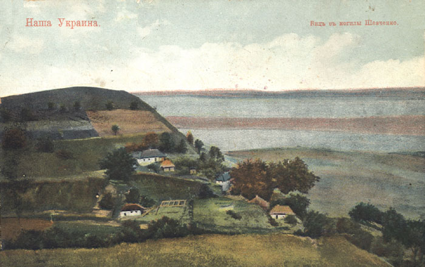
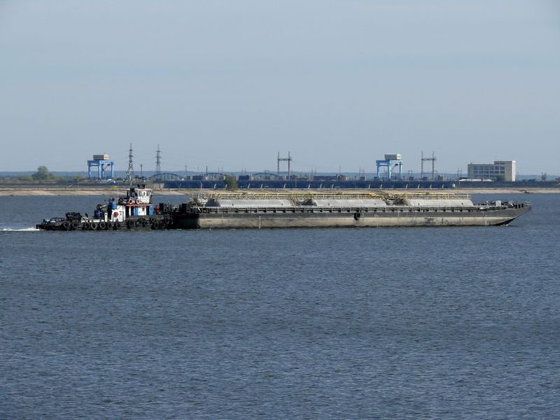
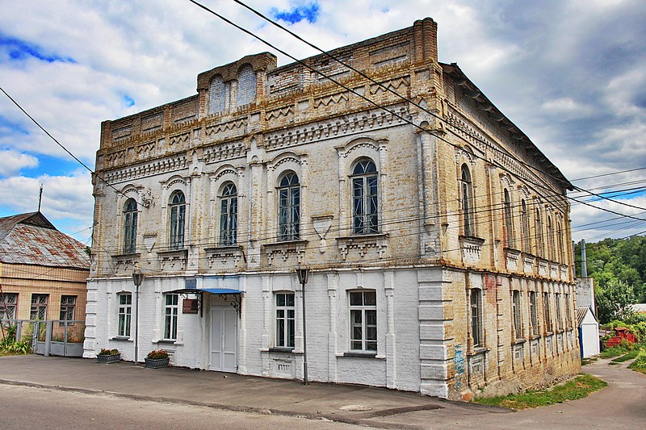
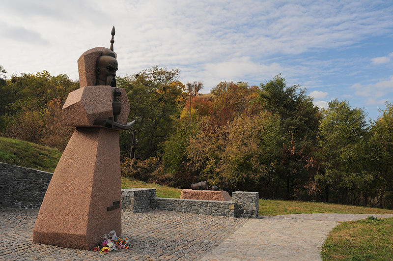

Матеріал з Вікіпедії — вільної енциклопедії.
Ка́нів — місто в Україні, Черкаському районі Черкаської області. Центр Канівської міської громади. Населення — 25 742 (на 1 жовтня 2019 року) особи.
Зміст
Географія
Місто розташоване на правому березі річки Дніпро. Відстань до Києва — 120 км, до Черкас — 78 км.
Походження назви
Про походження назви міста є кілька гіпотез. Дві з них тлумачать її, як слово татарського походження. Означає воно «ханський перевіз»[2] та «місце крові»[3]. Ще однією версією у перекладі з тюркської — «Дім Хана» («Кхан ев»)[джерело?]. За народним переказом, Канів походить від назви птаха-канюка[4]. Крім того, існує грецька версія походження міста — місто очерету, на що вказує і грецька колонія поблизу Канева. Мається на увазі схожість назви міста з грецьким словом «канос» — очерет, місце очерету. Запропонована одним з сучасних дослідників Канівщини
Історія
Перша письмова згадка про Канів міститься в «Печерському патерику» і датується між 1074 і 1088. Канів згадується також у 1144 році, коли князь Всеволод Ольгович заснував тут церкву святого Юрія (Успенський собор). У середині ХІІ століття Канів був великим містом і відігравав велику роль в житті Київської Русі. 1155 року він відомий як офіційне місце зустрічей руських князів з половецькими послами. Тут проходив великий шлях «з варяг у греки», який був важливою торговою артерією держави.
Місто не раз руйнували, зрівнювали з землею. У 1240 році Канів захопили і спустошили монголо-татарські орди, очолювані Батиєм.
Місто відвідувала делегація від Папи Римського до монголо-татар в 1245 році, яку очолював франциск Джованні да Плано-Карпіні. У власних подоражах він зазначає: «ми прибули до деякого селища, за назвою Канов»
Неодноразово Канів переходив із рук в руки. 1320 місто взяв литовський князь Гедимін. 1362 року місто опинилося під владою Великого князівства Литовського. За нього місто виросло і перетворилось на помітний торговельний центр. Починається будівництво Канівської фортеці.
У XVI столітті Канів став своєрідною козацькою святинею. Літні запорожці, які вже не могли брати участь у походах і боях, почали селитися та доживати віку на Чернечій горі, неподалік Канівського монастиря. 1578 року козаки перевезли сюди останки скараного у Львові гетьмана Івана Підкови, ще один гетьман запорізького війська, Яків Шах, доживав тут свій вік. У Каневі похований також гетьман Самійло Кішка.
Промисловість
Канівський «Маслосирзавод» (корпорація «Клуб сиру») увійшов у п'ятірку українських експортерів молочної продукції. Тверді сири під маркою «Канівські традиції», сухе молоко, масло користуються попитом в країнах близького і далекого зарубіжжя.
Продукцію під торговою маркою «Верес» виготовляє ЗАТ «Агроекопродукт» (до 1998 року—"Завод продтоварів"). В Каневі та селах району розміщені кілька переробних заводів цього підприємства, а також, сільськогосподарські угіддя, які належать йому ж.
ПрАТ «Миронівська птахофабрика» — компанія-виробник продукції бренду «Наша Ряба» і є найбільшим в Європі підприємством, що виробляє м'ясо птиці. Входить до складу Групи підприємств ПАТ «Миронівський хлібопродукт».
До числа найбільших роботодавців і джерел місцевого бюджету входить Канівська гідроелектростанція.
Освіта
У Каневі діють 5 загальноосвітніх шкіл, школа-інтернат, філія Східно-європейського університету менеджменту, Канівський коледж культури і мистецтв, Канівське вище професійне училище та Канівський еколого-інформаційно-технологічний коледж.
Культура
Музеї
-
Канівський історичний музей — вул. Героїв Небесної Сотні, 15
-
Канівський музей народного декоративного мистецтва — вул. Героїв Небесної Сотні, 64
-
Канівський музей Тараса Шевченка — Тарасова Гора
-
Літературна Канівщина — вул. Успенська, 78
Заповідники
Заповідники
-
Урочище Ісковщина: поселення трипільської культури (3 тис. до н. е.) та скіфського часу (7-3 ст. до н. е.)
-
Підніжжя великого скіфського городища: поселення епохи бронзи (поч. 2 тис. до н. е.)
-
Урочище Бабенківська левада: поселення епохи бронзи (поч. 2 тис. до н. е.)
Пам'ятки архітектури
-
Будинок Василіянського училища, 1784
-
Будинок в якому мешкав М. Ф. Біляшівський, 1904, Канівський Природний заповідник.
-
Синагога (мур.), вул. Воровського, 51

Пам'ятки природи
-
Костянецький Яр — комлексна пам'ятка природи місцевого значення.
-
Канівські куести — геологічна пам'ятка природи місцевого значення.
-
Канівські луски — геологічна пам'ятка природи місцевого значення.
Меморіали
-
Могила Миколи Біляшівського, 1926, (Канівський Природний заповідник).
-
Могила Олександра Ленського, стела та барельєф, 1908 (1954) Меморіальний парк.
Пам'ятники
-
Пам'ятник розстріляним у Берестовецькому яру
-
Пам'ятник кобзарю біля греблі Канівської ГЕС.

Пам'ятники, пов'язані з ім'ям Тараса Шевченка
-
Місце, де Тарас Шевченко мав намір оселитися у 1859 році, Шевченківський національний заповідник.
-
Шлях по якому везли домовину з прахом Тараса Шевченка від Успенського Собору у 1861 році.
-
Могила Тараса Шевченка, пам'ятник на могилі, Шевченківський національний заповідник.
-
Могила Ликерії Полусмак, нареченої Тараса Шевченка, 1917, вул Сельце, цвинтар.
-
Могила кобзаря Олексія Чуприни.
-
Пам'ятник Івану Підкові, 2007, вул. Монастирок.
